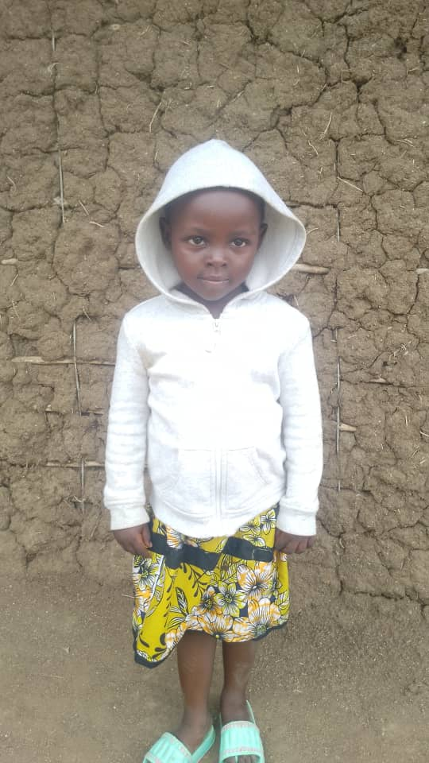
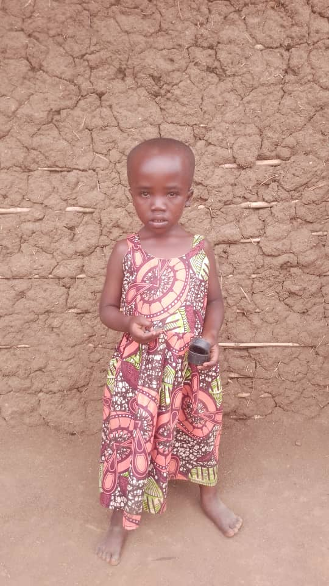
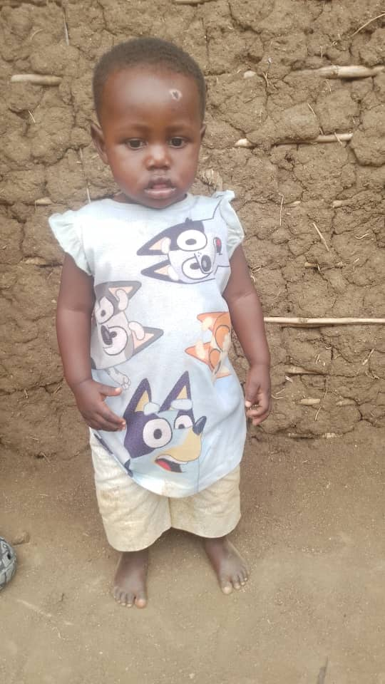
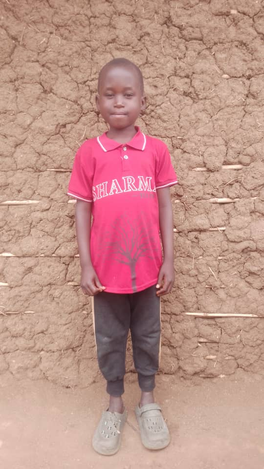
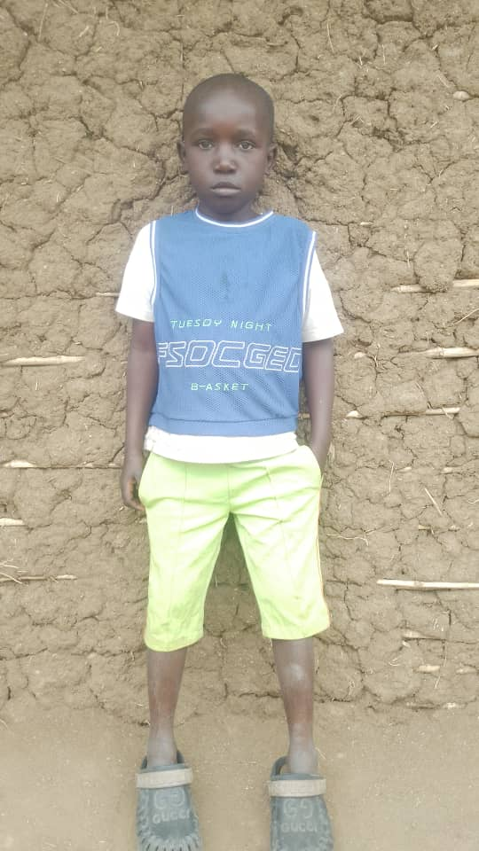
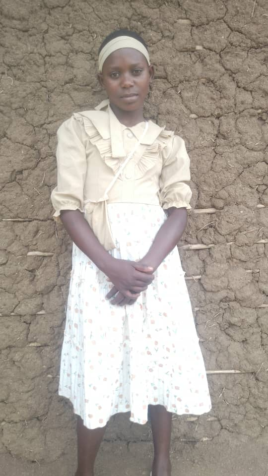
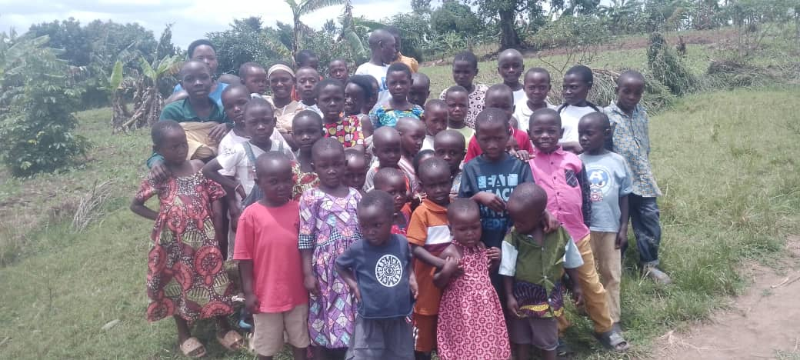
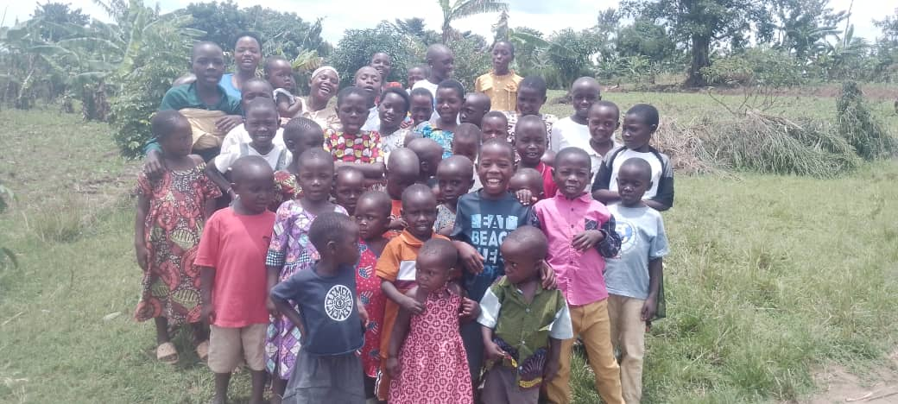

The Situation
Our church has a congregation of close to 300 members, the children alone are 150 and many of them are orphans whose parents died in Congo because of war.
Being refugees, there are a number of challenges they go through both physical and spiritual and as a leader you must plan a way forward.
We have tried to help spiritually by preaching a message of hope and provide trauma training but there is a big gap on the physical problems. At least umoja one loans have helped some members begin some businesses.
When it comes to orphans, neither UN nor NGOS have paid much attention to them. As a church in 2020 we started a nursery school with the support of missionary Ruth Kim My former Bible college teacher who used to motivate teachers for two years and the school offered completely free education to all orphans. Unfortunately her mission ended in Uganda and everything ended. We temporarily closed the school to reorganize.
This year due to the increase of orphans in the church and in the community around and the lack of quality education around, we took a step of faith and reopened the school to provide free quality education to orphans and affordable quality education to others.
Since the beginning is always difficult, we are praying for a good Samaritan who can stand with us for the salaries of four teachers shs 1,200,000/ per month for a period of two years then the school will be in position to pay for the teachers.
— Patrick Musemeza, Church Leader and School Founder
The Children
These are some of the orphaned children the school serves. Many lost their parents to the conflict in the Democratic Republic of Congo and now live as refugees in Uganda.






Some of the children enrolled at the school
The Community


How You Can Help
The school needs funding for four teachers' salaries for a period of two years, after which it will be self-sustaining.
Donations from the US are coordinated through a trusted contact who handles the international transfer directly. Any amount helps—even a one-time gift makes a difference.
To contribute or learn more, please reach out:
Get in Touch